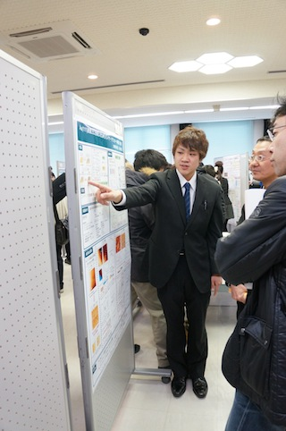
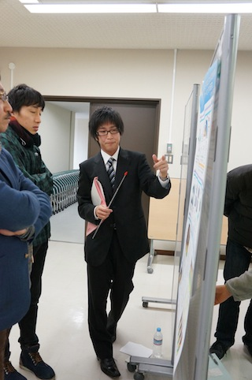
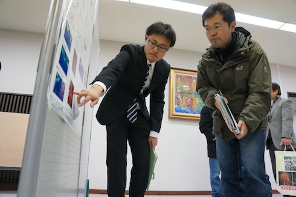
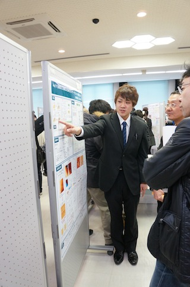
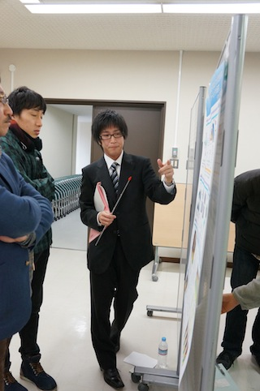
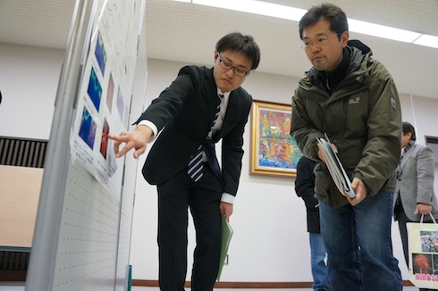

平成 23 年度 卒業論文発表会
広島大学理学部で 15 日、理学部物理科学科に在籍する ４ 年生による卒業研究の発表会が開かれた。光物性研究室に在籍する岸水、白井、永田、藤川は座学や物性セミナーから物理を学び、自分の手で実験を行うことで理解を深めてきた。発表会では 1 年間取り組んできた研究を口頭とポスターにより発表し、議論を交わした。
岸水 悠介
「Au(111)表面上に形成したCoモノクラスターの構造と磁性」

白井 開渡
「角度分解光電子分光を用いたトポロジカル絶縁体TiBiSe2のキャリアドーピングの研究」

永田 偉士
「高分解能角度分解光電子分光によるLa/W(110)の電子状態の研究」

藤川 和志
「放射光角度分解光電子分光によるBa0.69K0.31Fe2As2の準粒子構造の研究」

「Au(111)表面上に形成したCoモノクラスターの構造と磁性」

「角度分解光電子分光を用いたトポロジカル絶縁体TiBiSe2のキャリアドーピングの研究」

「高分解能角度分解光電子分光によるLa/W(110)の電子状態の研究」

藤川 和志
「放射光角度分解光電子分光によるBa0.69K0.31Fe2As2の準粒子構造の研究」